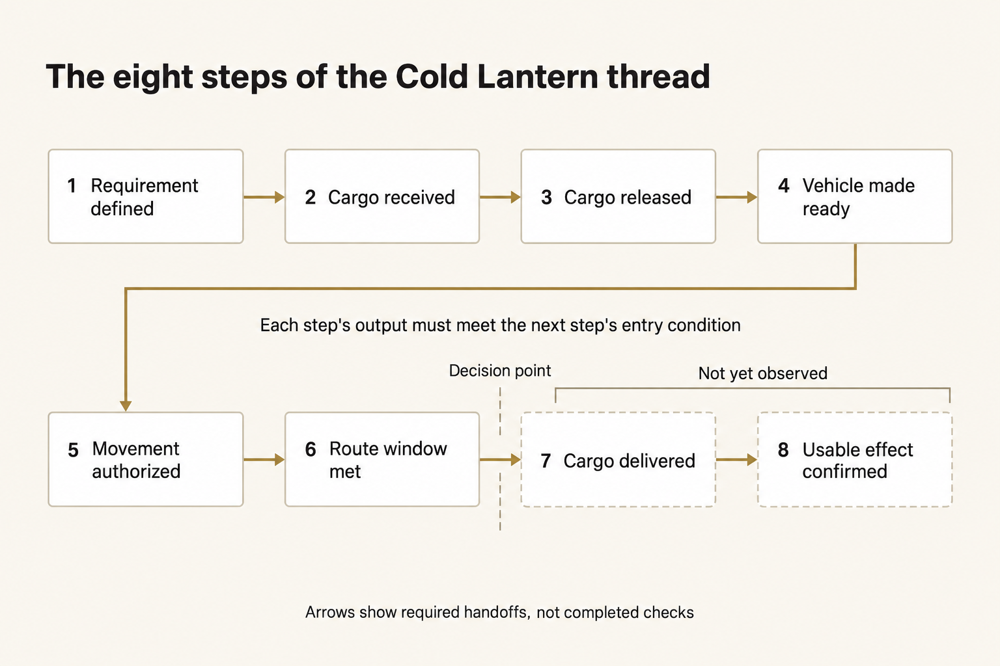
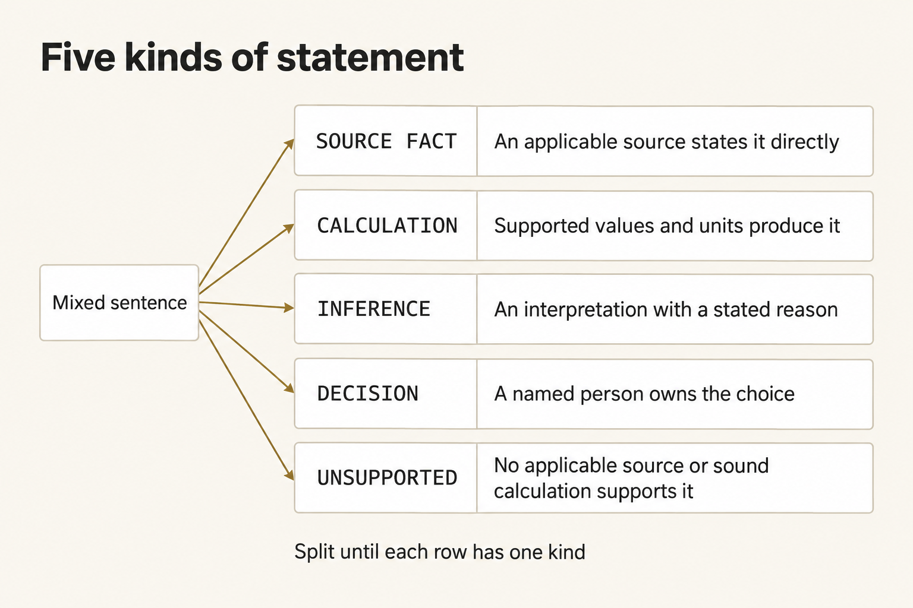
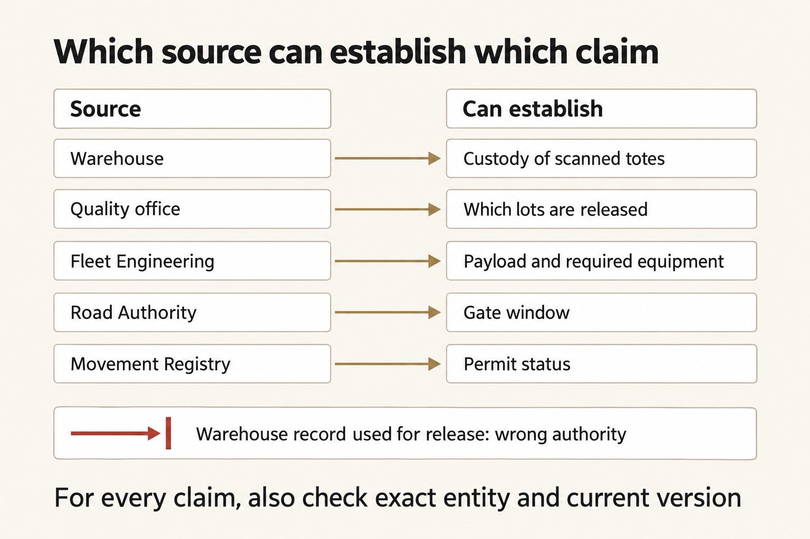
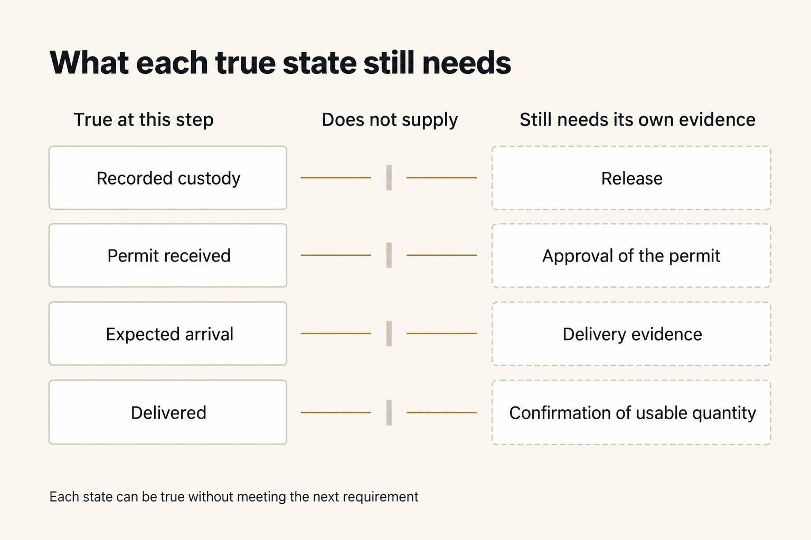

Read a mission thread without getting lost in it
A brief can quote true facts and still recommend a move those facts don't support. Before you accept Cold Lantern's GO, look at what each of the eight steps actually shows, and what the next step needs from it. Give this about 15 minutes.
On this page
What a mission thread is
A mission thread is the path from the request to the result. It shows what has to happen, in what order, and what each step has to hand to the next one.


Each step has to give the next step what it needs. An expected arrival is not a delivery, and a delivery is not proof the clinic could use the cargo.
Figure text
Follow the path in order: 1. Requirement defined; 2. Cargo received; 3. Cargo released; 4. Vehicle made ready; 5. Movement authorized; 6. Route window met; 7. Cargo delivered; 8. Usable effect confirmed. What a step produces has to be what the next step needs before it can start. The arrows are required handoffs, not checks you have already finished. You make the decision after step 6. Delivery, and proof the clinic could use the cargo, have not been seen yet.
The eight steps are:
- Requirement defined — you can name the destination, the usable quantity, the route, and the deadline.
- Cargo received — the warehouse has recorded the exact totes and lots it is holding.
- Cargo released — the quality office has said which lots may be used.
- Vehicle made ready — the released load, plus the required rack, fits the vehicle.
- Movement authorized — the permit is for this vehicle and this route.
- Route window met — the vehicle can reach the gate before the gate closes.
- Cargo delivered — the route can reach the clinic by the deadline, and later evidence would have to record the actual delivery.
- Usable effect confirmed — the clinic records that it received the released quantity it needed.
At step 6, decide whether the evidence supports the GO. An expected arrival does not prove the cargo was delivered, and it does not prove the clinic used it.
Why a thread becomes difficult
Don't stop at the name of a recorded state. A record that the warehouse has the cargo does not, by itself, mean anyone is allowed to use it.
"Cargo received" breaks into smaller questions:
- Were these exact totes scanned?
- Do their lot IDs match this mission?
- How many kits are in each tote?
- Does the warehouse record only say it has the cargo, or is it also allowed to release the kits?
- Was the record current at the decision time?
- What does the next step need from this one?
Every step works the same way. When those questions matter, check these seven things:
| Part | Plain question |
|---|---|
| Identity | Is this the exact mission, route, vehicle, permit, lot, clinic, and source revision? |
| Authority | Is this source allowed to establish this kind of fact? |
| Time | Was it current at 14:05 MDT, and is its time zone understood? |
| Quantity or condition | Are the count, units, required equipment, and state correct? |
| Dependency | What had to be true before this step could begin? |
| Handoff | Does this step's output meet the next step's entry condition? |
| Uncertainty | What is unknown, assumed, contradicted, or not yet observed? |
Stop splitting a claim into smaller claims when you reach one of these:
- a fact you can read directly in a source that applies;
- a calculation you can redo from numbers the sources state, with the units shown;
- an assumption you have named as an assumption;
- something still unresolved, which means
HOLD; or - a decision a named person owns.
Five kinds of statement
If a statement could change the decision, label it. In the AI brief, give each one exactly one kind.


Break a mixed sentence apart until each claim that could change the decision has one kind, and its own support.
Figure text
Keep splitting a mixed sentence until each row has one kind. A SOURCE FACT needs a source that applies and says it directly. A CALCULATION needs numbers and units that produce it. An INFERENCE is your reading of the facts, with the reason stated. A DECISION needs a named person who owns the choice. Mark a statement UNSUPPORTED when no source that applies, and no sound calculation, supports it. These are different kinds of statements. They are not a ladder that turns a fact into an approval.
SOURCE FACT— a source that applies says it directly.CALCULATION— numbers and units from the sources produce it.INFERENCE— you read the facts a certain way, and you say why that reading follows.DECISION— a named person chooses what happens next.UNSUPPORTED— no source that applies, and no sound calculation, establishes it.
One sentence can hold more than one kind. Split it until each row has only one.
The right source depends on the claim
A real source is not the right source for every claim.


A real source can still be the wrong one for this claim, this truck, this route, or this time.
Figure text
For what was scanned, use the warehouse. For which lots are released, use the quality office. For the load and the required equipment, use Fleet Engineering. For the gate window, use the Road Authority. For the permit, use the Movement Registry. A real warehouse record is still the wrong source for a release. For every claim, also check that it names the right truck, route, or lot, and that you have the current version.
- The warehouse records what it scanned.
- The quality office decides which lots are released.
- Fleet Engineering sets the vehicle's load limit and the required equipment.
- The Road Authority sets the gate window.
- The Movement Registry records whether the permit is approved.
- A real warehouse receipt can still be the wrong file for whether the kits may be used.
- A current community update can be about a different route.
- A vendor note can give you real dimensions and, in the same file, tell you or a tool what to do. Quote that instruction and reject it.
Judge the source against the exact claim in front of you.
What the next step needs
A step can be right, and the conclusion can still be wrong, if that step never established what the next step needs.


Ask what the next step needs. A true statement from earlier cannot fill in missing permission, or a missing observation.
Figure text
A record that the warehouse has the cargo does not replace a release. A permit that was received still needs approval. An expected arrival still needs evidence that the cargo was delivered. A delivery still needs the clinic to confirm it got a usable quantity. Each of those can be true without meeting the next requirement.
- Twelve totes can be scanned while only ten are released.
- Released cargo can fit, and the required rack can still push another load over the limit.
- A permit application can be received while the permit is still pending.
- The clinic can be reachable by 16:00 while the gate closes before the truck arrives.
The thread holds only when every required handoff up to the decision holds. An estimated arrival at the clinic is not a delivery. A delivery is not yet the clinic saying it received a quantity it can use.